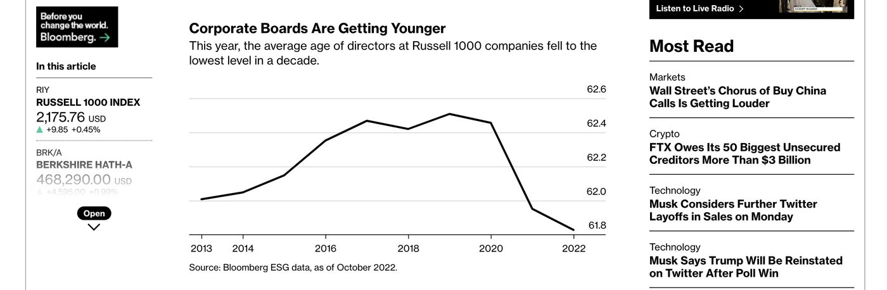
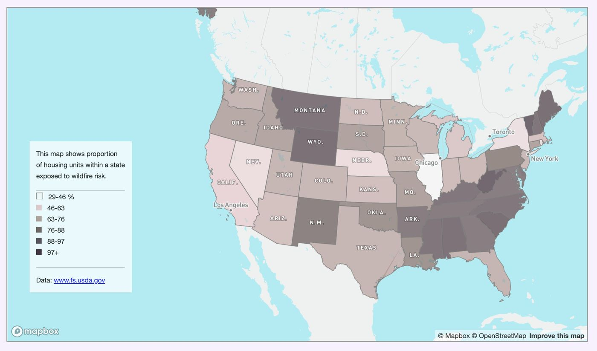
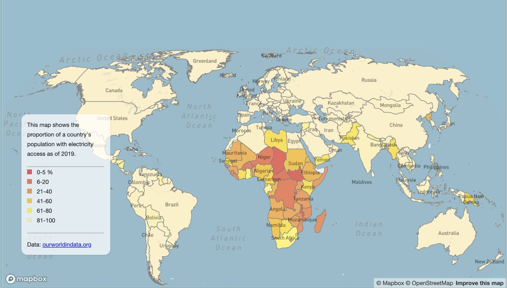
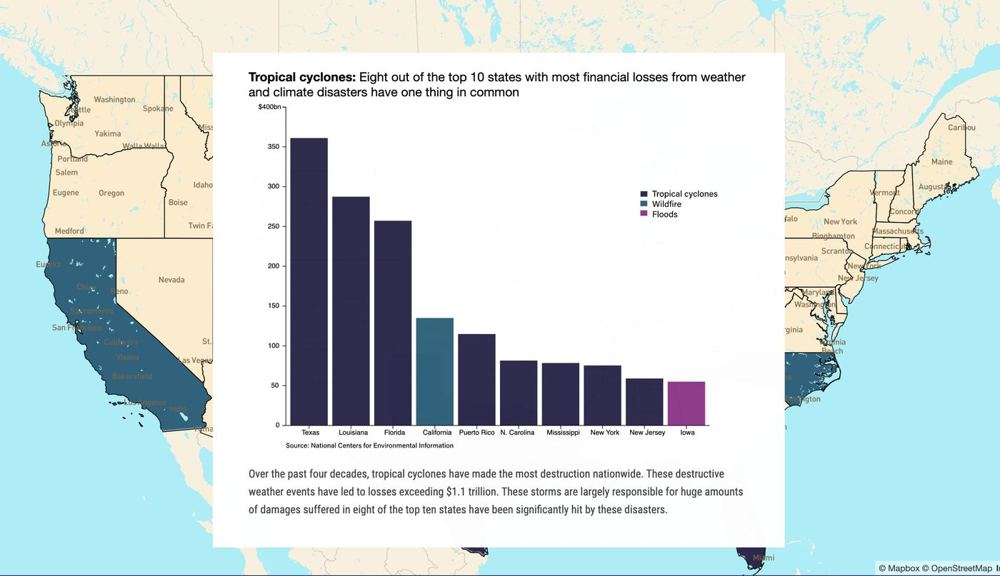
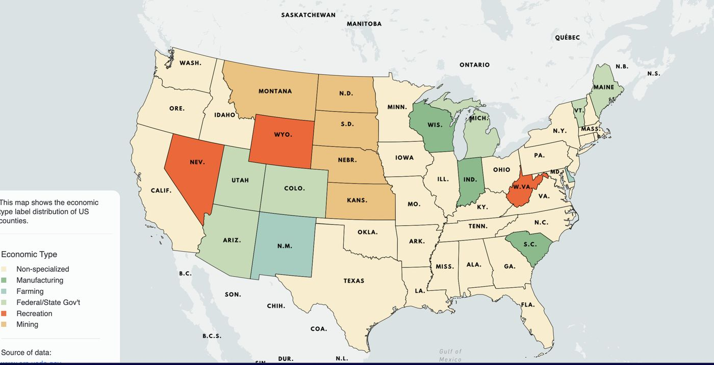

● Data journalist
Using data to tell the stories of underserved communities.
I report with numbers: scraping public records, building maps and turning datasets into stories for readers at Bloomberg and beyond.
Portfolio
Selected work

Bloomberg · Oct 2022
Corporate boards are getting younger
The Great Resignation, the Big Quit, the Great Reshuffle: a wave of pandemic-era early retirements helped make corporate boards younger.
Read on Bloomberg ↗Bloomberg · Nov 2022
NYC employers’ solution to pay transparency
Employers are testing the limits of a new city law requiring salary ranges on job ads, posting pay bands that in some cases span more than $100,000.
Read on Bloomberg ↗
Interactive map
Mapping communities exposed to wildfire risks
Using the Wildfire Risk to Communities data to show which places face the greatest danger.

Interactive map · Mapbox
Central Africa remains dark despite vast energy potential
A Natural Earth projection in Mapbox showing electricity supply across the globe.

Interactive
Weather and climate disasters cost over $2.2tn
The US has had 332 weather and climate disasters since 1980 whose damage reached or exceeded $1 billion each.
Data story · Web scraping
Ghana’s parliament looks to halt a costly tax exemptions regime
Built by scraping Ghana’s Parliament website for every tax waiver approved since 2013.
Data story · NYC 311
NYC’s most popular illegal pets
An analysis of 311 complaints about illegal pets across New York City.

Scrollytelling · ai2html
A tale of rising inflation, stagnating wages and pricey gas
Includes a recreated map of each county’s dominant economic activity.
How I work
Methods
Records & scraping
Collecting data that isn’t published as data, from parliament records to city complaint logs.
Analysis
Python and notebooks to clean, join and test datasets before a single sentence is written.
Maps
Interactive and static maps with Mapbox and GIS tools, built for both desktop and phone.
Graphics & story
ai2html graphics and scrollytelling that guide readers through the numbers.
About
A business reporter turned data journalist.
Richard A. Abbey is an award-winning Ghanaian business journalist and data journalist. He spent a decade reporting in Ghana, rising to Managing Editor of Business24, the country’s first digital business publication.
He holds an MS in Data Journalism from Columbia University’s Graduate School of Journalism and was a 2022 Pulitzer Center Post-Graduate Reporting Fellow. His work has appeared in Bloomberg.
He has covered the World Bank/IMF meetings and Mobile World Congress, and is most drawn to stories about underserved and marginalized communities. He also likes to see new places.